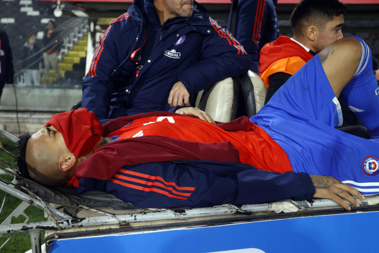
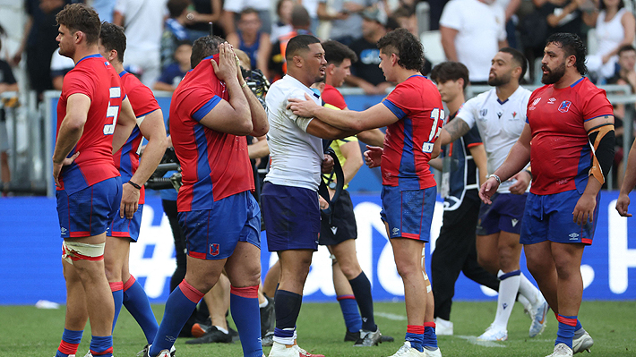
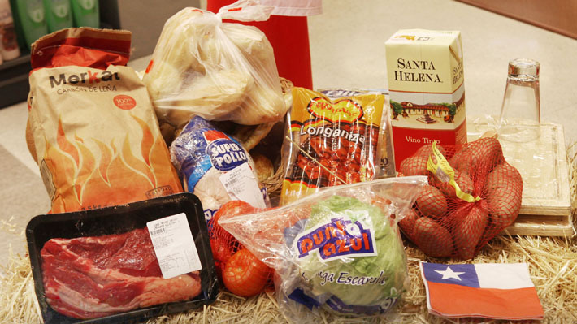

Guerra Ucrania-Rusia, en directo | Kiev anuncia la liberación de más territorio en los alrededores de Bajmut y en el sur del país

Ucrania ha afirmado este lunes haber liberado siete kilómetros cuadrados en la última semana en zonas del este y el sur del país ocupadas por el ejército ruso, donde las fuerzas de Kiev llevan a cabo desde junio su contraofensiva. La hasta hoy viceministra de Defensa Hanna Maliar ha indicado que las fuerzas ucranias recuperaron dos kilómetros cuadrados la semana pasada en la zona de la ciudad clave de Bajmut, en el este, en particular los pueblos de Andriivka y Klishchiivka. Rusia ha vuelto a lanzar una oleada masiva de drones y misiles contra Ucrania. Según Kiev, las defensas antiaéreas han podido derribar los 17 misiles y 18 de los 24 drones lanzados contra las provincias de Odesa —donde Rusia ha intensificado sus ataques para dañar instalaciones portuarias y relacionadas con la exportación de cereales— y Mikolaiv (sur). Además, el Gobierno de Ucrania ha anunciado la destitución de los seis viceministros de Defensa. La decisión llega después de que a principios de este mes fuera destituido el que hasta entonces era ministro de Defensa, Oleksi Reznikov, tras 18 meses de guerra.
Categoría: Noticias
Encapuchados causan destrozos en el Palacio de la Moneda en Chile
Un grupo de encapuchados causaron destrozos hoy en el palacio presidencial chileno: la moneda. Los hombres rompieron ventanales y destruyeron parte del sótano del edificio. La policía antidisturbios tuvo que lanzar chorros de agua y esto ocurre en la víspera del 50 aniversario del golpe de estado contra Salvador Allende y luego de la tradicional marcha que recuerda a las miles de personas desaparecidas durante la dictadura de Pinochet. Esa dictadura duró 17 años y más de 40000 personas fueron víctimas de ese mandato entre ejecuciones, detenciones y desapariciones forzosas.
Categoría: Noticias
En alerta parte de EE.UU. y Canadá por huracán Lee

El huracán Lee ya tiene a varios estados del área de Nueva Inglaterra y la costa sureste de Canadá bajo alerta de tormenta tropical, el fenómeno tocará tierra mañana sábado por la noche aproximadamente. Millones de personas se apresuraron para hacer sus compras de último minuto y poder quedarse en casa para resguardarse de este huracán categoría 1 que tiene vientos sostenidos de unas 80 millas por hora. copiosas lluvias y marejada ciclónica potencialmente mortal también están en el panorama. El presidente Biden le otorgo la declaratoria de desastre a la gobernadora de Maine Janett Bills, y esto para asegurar los recursos necesarios en ese estado que ya se encuentra bajo emergencia.
Categoría: Noticias
Vidal no aguantó más: así fue su dramática salida del Monumental

Chile tuvo que lamentar una baja durísima en el duelo ante Colombia. Arturo Vidal, quien le cambió la cara a la Roja en el duelo ante Uruguay, aguantó hasta los 70 minutos en cancha y tuvo que ser reemplazado. Desde antes del comienzo del partido las sensaciones con el volante no eran las mejores. Su suplencia en Montevideo fue la primera señal, y aunque ahora se esforzó por ocupar un puesto en el mediocampo, ya el rostro lo delataba durante el calentamiento: no estaba para jugar todo el partido. Los gestos de dolor eran evidentes en cada intervención de Vidal, pero el mediocampista siempre ofrece algo más. Aguantó, peleó, mostró despliegue y buen juego, hasta que a los 30 minutos otra vez asomó el miedo. Se tomó la rodilla, se quedó varios minutos en el suelo, pero pudo seguir. Vidal apareció en el segundo tiempo con un vendaje reforzado y las ganas, pero el cuerpo ya no era el mismo. Batalló durante 69 minutos, hasta que en un ataque de Colombia terminó chocando con Luis Díaz, y no se levantó más. Tuvo que ser reemplazado por Charles Aránguiz, recibiendo una ovación de todo el Monumental.
Categoría: Noticias, Deporte
Mundial de rugby: Los "Cóndores" sufrieron ante el poderío de Samoa y sumaron su segunda derrota

Los "Cóndores" no pudieron ante Samoa en su segundo partido del Mundial de rugby 2023, disputado este sábado en Burdeos. Chile dejó todo, pero no fue capaz de sostener su nivel y cayó por 43-10 tras una mala segunda parte. El encuentro, disputado en el estadio Atlántico de Burdeos, arrancó con la tradicional danza guerrera indígena de Samoa, "Siva Tau". Tras un penal convertido por los samoanos, mediante Christian Leali'ifano, Chile sorprendió a todos con un gran try para ponerse en ventaja contra todo pronóstico. Una rápida jugada de ataque bien culminada por la primera línea permitió a Matías Dittus llegar al ingoal oceánico y puso a los "Cóndores" arriba por 7-3, tras la conversión de Santiago Videla. Pero poco duró la alegría nacional, ya que para el minuto 13 ya perdía por 9-7 tras dos penales convertidos por Christian Leali'fano, tras sendas infracciones. Tras una patada de Matías Garafulic, que puso a los de Pablo Lemoine por 10-9 arriba, los samoanos encontraron su mejor forma y desnivelaron el duelo. Un ensayo de Duncan Paia'aua más la conversión de Leali'fano dejaron la cuenta 19-10 para el conjunto isleño. Y en el segundo lapso, todo se derrumbó rápido para el quince de Lemoine, porque la experiencia de Samoa marcó la diferencia con tres ensayos entre los minutos 41 y 52 para sacar una ventaja irremontable de 36-10. Con todo decidido, Chile no podría reducir los errores en los últimos minutos y Samoa anotó su último try en la última acción del choque, lo que significó el 43-10 final. Así, los "Cóndores" quedaron en el último puesto del Grupo D sin puntos y en su próximo choque enfrentarán a un candidato al título: Inglaterra, el siguiente sábado a las 12:45 en Lille. La victoria permite a Samoa mantenerse en la carrera por uno de los dos puestos de privilegio, donde lucharán por los dos cupos a cuartos ante Argentina, Inglaterra y Japón.
Categoría: Noticias, Deporte
Chile quedó eliminado de las Finales de la Copa Davis tras primer triunfo de Italia ante Suecia

Terminó la ilusión de Chile en las Finales de la Copa Davis 2023. Este domingo, el equipo que capitanea Nicolás Massú quedó eliminado del torneo. Esto tras el triunfo del italiano Matteo Arnaldi sobre el sueco Leo Borg en dos sets (6-4 y 6-3), lo que clasificó a Italia para la "Final 8" que se disputará en Málaga a finales de noviembre. El resultado terminó dejando sin opciones a Chile, matemáticamente eliminado producto de esa primera victoria italiana. El equipo local, en Bologna, necesitaba un punto de su confrontación ante Suecia para avanzar junto a Canadá a la ronda de los ocho mejores. Así, el elenco canadiense ganó el grupo con marca de 3-0 y aseguró el primer puesto de la zona, mientras que los "azzurri" se ubicaron en el segundo lugar. Los nacionales fueron terceros y los escandinavos cerraron en el último puesto, ambos fuera de carrera. ¿Qué viene ahora? Chile tendrá que enfrentar las Qualifiers de las Finales de la Copa Davis 2024 en febrero próximo, ante un rival por definir. El sorteo de esa etapa se llevará a cabo en noviembre, durante la "Final 8" de Málaga, una vez definidos los clasificados a semifinales que irán por la "Ensaladera de Plata" esta temporada.
Categoría: Noticias, Deporte
Valor de su acción cayó más de 50% en 5 años: Las 5 claves para entender el momento que vive Falabella
12,5% con respecto al mismo periodo del año pasado. El ebitda, por su parte, se desplomó 42%. Así, las pérdidas del holding —entre enero y junio de este año— fueron de US$ 6 millones. Los ajustes para enfrentar la situación se han hecho sentir: más de 9 mil trabajadores dejaron la compañía. Además, la empresa comenzó la venta de activos, que intentará recaudar unos US$ 400 millones. A eso -y para contener la crisis- se sumó la llegada a la presidencia del directorio, hace 4 meses, de Enrique Ostalé, quien ya tomó su primera gran decisión: Gastón Bottazzini, gerente general corporativo, dejará su cargo a fin de año. La situación en la que se encuentra envuelta la compañía solo se comprende al remontarse algunos años atrás, cuando, incluso antes del estallido y la pandemia, el holding decidió pisar el acelerador en el que, muchos pensaron, sería su negocio estrella. Aquí, 5 claves, explican el momento que vive Falabella. Presente de la acción Las cifras de las acciones de Falabella dan cuenta de una pendiente muy inclinada. Y es que si en 2018 el valor de la acción superaba los $5.000, hoy apenas se eleva por sobre los $2.000. La situación en 2023 es un claro reflejo de la crisis: el precio máximo de la acción llegó a los $2.418, mientras que el mínimo a $1.610. Así, el precio promedio en lo que va del año es de $1.928. La cifra más baja en la que ha estado la acción en los últimos 12 meses es aún menor: de $1.491. Al cierre de esta nota, la acción de Falabella estaba en $2.100.
Categoría: Noticias, Negocios
Gremios alertan por consecuencias que traería cierre de Huachipato y piden que Gobierno intervenga
La crisis en la siderúrgica Huachipato la tiene con riesgo de cierre en diciembre de este año. Ese plazo fue señalado por el gerente general de la compañía, César Garrido, durante la sesión de la Comisión de Fomento Productivo del Consejo Regional este miércoles. Asimismo, indicó que se necesitan medidas de salvaguardia por parte del Gobierno, con el fin de evitar la competencia desleal de China. Por su parte, el presidente del Sindicato N°2, Fernando Orellana, dijo que se debería eliminar el impuesto verde. En materia empresarial, gremios alertaron las graves consecuencias que significaría un eventual cierre de la compañía acerera. El presidente de la Cámara de la Producción y el Comercio (CPC) Biobío, Álvaro Ananías, señaló que "como CPC Biobío nos preocupa que esta empresa ancla de nuestra región se vea afectada por la competencia desleal de países como China". Ananías resaltó que China no ha logrado recuperar las tasas de crecimiento pre pandemia y que el área de la construcción en ese país está enfrentando desafíos que han provocado la quiebra de muchas empresas. Por ende, hizo un llamado al Gobierno. "Que actúe de oficio solicitando a la Comisión Nacional Encargada de Investigar la Existencia de Distorsiones en el Precio de las Mercancías Importadas que abra una investigación, y así el Estado pueda tomar medidas provisorias que permitan resguardar a Huachipato ante este escenario y se logre dilucidar lo que está afectando a la industria". Por su parte, la Agrupación de Organizaciones Productivas del Biobío (Agop), solicitó formalmente al Gobierno un pronunciamiento respecto a "la necesaria protección a la industria nacional de acero que se encuentra bajo ataque por parte de productores internacionales, que colocan el producto en el mercado chileno un 40% más barato". Desde la multigremial se indicó que "el cierre de Huachipato generaría un daño irreparable a la industria local, profundizaría la crisis económica en la decena de encadenamientos productivos vinculados a CAP Acero y generaría un efecto feroz en las cerca de 20 mil familias que dependen de la siderúrgica". Por último, desde Agop se indicó que esta realidad profundiza el deterioro sistemático en la zona, tras lo sucedido con el cierre de Horcones II y de Fanaloza.
Categoría: Noticias, Negocios
"Canasta Dieciochera": Cadena de supermercados se enfrenta a Sernac y lo acusa de "inconsistencias metodológicas"

Enfrentados se encuentran en este momento Unimarc con el Sernac. Todo esto debido a que hace unos días, el Servicio Nacional del Consumidor lanzó un estudio llamado "Canasta Dieciochera Sernac", en el cual compararon precios de 17 cadenas de supermercados diferentes, llegando a la conclusión que la canasta de Unimarc era la más cara de adquirir, con un valor de $53.980. Frente a esto, desde Unimarc advirtieron "inconsistencias metodológicas" en el monitoreo de los precios y acusaron al servicio de "falta de rigurosidad" en la confección de la comparación y que esto induciría a "confusión y error" en la decisión de compra de los consumidores. Argumentaron, además, que las canastas no son comparables porque "el estudio no indica la marca de los productos y otros elementos esenciales, como variedad entre fresco y congelado y país de origen, por lo que no se estarían considerando productos idénticos". Y concluyeron que "no existe" por lo tanto uniformidad de información. Así, tomando como ejemplo el producto "longanizas parrilleras" de la Canasta Dieciochera, y el stock disponible en una tienda Unimarc y otra Mayorista 10, ambas de la misma comuna, "las marcas, calidades y forma en que se venden los productos (granel y envasados) son muy distintas" argumentaron desde la cadena de supermercados. "Mientras en Unimarc se estarían considerando longanizas parrilleras de categoría premium y productos envasados, en Mayorista 10 se manejan otras categorías de productos y precios más convenientes, lo que explica la diferencia de precio entre ambas cadenas. De esta manera, la metodología utilizada por Sernac para comparar las canastas dieciocheras en los distintos supermercados por no utilizar productos iguales induce a error y genera confusión en la decisión de compra de los consumidores, provocando un daño reputacional a Unimarc". Señalaron también que según "lo informado por Sernac los precios se habrían obtenido del observatorio de precios y de los sitios web de los distintos supermercados". Sin embargo, "algunos de ellos no cuentan con venta online, por lo tanto, se habría comparado precios de fuentes distintas". Por último, agregaron que "se desconoce el periodo de toma de precios" y que la Canasta Dieciochera "realiza una comparación de canastas que contienen distintas cantidades de productos, comparando por ejemplo canastas de 14 productos para un supermercado y de un número menor de artículos para otros, lo que induce a error a los consumidores".
Categoría: Noticias, Negocios